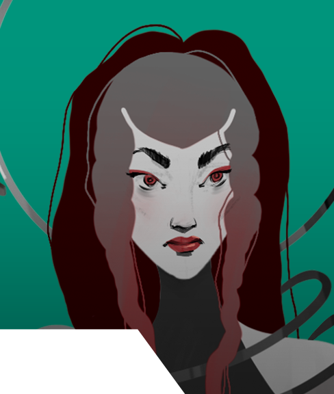

Usually, the more new things I have to learn the better.
Truth be told, like most other people, I sometimes fail to finish some of them because of the amount of things I need to master in a short amount of time. Most of the time though, they push me into giving my best, but also most importantly, it got me into learning how to learn, which i believe is one of the most important things you can focus on in the age of internet.
In regards to games, not to state the obvious here, but I love playing them (from paying cards to board games and digital) since I was a little child, especially anything that has dragons in it. My favorite games are, of course, Dragon Age Inquisition and Dungeons & Dragons.
I always liked to combine a large variety of techniques and different pieces of knowledge, some of which don't have a direct link to the technical part but make the end product unique and interesting. Of course, I also have a passion for finding out the science behind the things I enjoy. That being said, I believe that the game industry is right for me.
Laura Mierea
Portfolio
Hello, my name is Laura.
I am currently a student at the West University of Timisoara following a bachelor programme in the field of Art Restoration and Conservation. Prior to this, in High School, I majored in Graphic Design.
I have always had a passion for arts and discovering a large variety of ways to create it and my tendency is to choose projects based on their theme and nature — not necessarily trying to stick to the ones that fit the "established field" or niche of my profession.
Yara
Character Art
Faction: The High Order
Alignment: Lawful Evil
Lore: Coming from a long line of genetically gifted heirs to the shady High Order. Yara is a high priestess that uses her power to command an arsenal of knives.
She is a cold hearted, sharp minded woman, with precise features, a gosthly white complexion and frightening red eyes.
Her team mates are more important than life itself. Even if she seems cold and unforgiving at the surface, she ows her life to them.
She is loyal dedicated to her beliefs and will give anything to achieve her goals — even her life.
Software: Procreate
The Altar
Environment Art
This is a part of an in progress project, a story driven hidden object game. The story is taking place in a fantasy medieval world. Some portions of the game will progress in an animated comic book fashion, where certain events will be displayed as individually drawn scenes and audio (music and dialogue) that plays along with the illustrations. Besides finding objects, the player will solve puzzles and riddles while progressing through the story. The first picture to the left shows an idea of how the comic book scenarios will look like. I have created a 3D block-in of the environment so it would be easier and faster to create the scenes without worrying about perspective.
Software: Procreate, Blender 3D
Karen & Flimsy
Character Art
Karen & Flimsy embody a gangster octopus old lady and her cute and small pet.
I wanted to give Karen a bit of a more frightening look by giving her sharp gold fangs and placing her eye into her hat but at the same time keep the old lady aesthetic with the summer clothing and her body figure.
For Flimsy I intended a more fragile and friendly look, given by his round figure, small feet and jelly complexion.
Software: Blender 3D & Adobe Substance Painter
Apples
3D Practice
This project was made by following a tutorial made by Zach Reinhardt from CGBoost. This was part of my latest venture: finally biting the bullet and trying to learn 3D modelling. I learned how to work in Blender by making a realistic looking scene with the following components: wood planks, apples, metal bowl, fabric cloth, and a knife made from metal and wood. I would say that the most fun part was using gravity and rigid body simulation to drop the apples and the cloth into an aesthetically pleasing position.
I focused more on learning the technique than following exactly what the tutor did by trying to work ahead of the tutorials and only checking to see if I went about it the right way.
Software: Blender 3D

Art Game
Game Design
These are a part of my Graphic Design attestation diploma. The theme was Timisoara European capital of culture, 2021. The playing cards subtheme is Timisoara’s premiere events, for example — being the first electric illuminated city in Europe, I also made the typeface that I used for the cards. The main element of both is a stylized floral shape.
Software: Adobe Illustrator
Game Rules:
This is a game concept that I came up with to help me figure out what I want to draw when inspiration doesn’t strike me.
The game has two modes: Study and Creative
The rules of the game are simple:
1.Shuffle the cards.
2.Deal two of cards in a row.
The first card gives you the broad category and the style in which you should work.
The second card gives you a specific item in the category that you should work on.
In the creative mode, you deal three sets of two cards, again following the same rules.
For example:
A + 8 -> Mammals - Monkey
6 + 4 -> Environment - Artificial: VIP Lounge
9 + 6 -> Clothes - New York Italian Mafia
You now have to create an illustration,
in the style of your choosing, of a
monkey in a high end VIP Lounge dressed
as an italian mobster in the 1920's.
Study game:
Creative Game:
576 Possible Ideas
2,985,984 Possible Ideas
Playing Cards
Game
These are a few playing card samples of a dark themed pack with stylized characters that I made as a personal project. They were made in a wireframe illustration design style.
Software: Adobe Illustrator
The Red Castle
Motion Graphics
This piece was made in the flat illustration design style and embodies a Sci- Fi scenery of a castle placed in space on a foreign planet. I used a warm color palette for it.
A challenging part of this was synchronizing the movement of the pillars in the background but in the end this turned out to be one of the most fun projects I did.
Software: Adobe Illustrator & After Effects
*music from Epidemic Sound*
Sharp Eyes
Animation
Concept: I started with the idea of an illustration with one eye reflecting in broken mirror pieces, I tried to give it a mysterious vibe by adding red light on the shards. Then I animated the eyes to blink using frame by frame animation in Procreate and placed them in After Effects in order to make them blink asynchronously. In the background I illustrated a person’s figure, half skull — half face, split up by another mirror piece that was placed on the side with the face.
Software: Procreate & Adobe After Effects
Vortex
Abstract Environment
This is part of a little exercise I like to do from time time, with no concept or any idea of what I am going to do I open one or two programs and and play with different functions without giving much thought to what they are doing (It’s also a great way to learn new pieces of software). This one is my favorite so far, it was made with the 3D function in Illustrator and some of the blending modes in Photoshop.
Software: Adobe Illustrator, Photoshop & After Effects

Marine Life
Illustrations
These are two marine themed illustrations, in the one with the leafy sea dragon I tried a more realistic approach and in the one with the two fish I wanted to show its nature only with the help of shapes, textures and lines so I chose some unnatural colors.
Software: Procreate

Family Tree
Illustration
“The Girl and the Soldier” was made in the flat design illustration style and its theme was Ancestry. I thought out the illustration in order for the theme to be shown through the similar features present on the two characters.
Before making the final piece I made a few sketches to find the best idea that would illustrate the given concept.
Software: Procreate